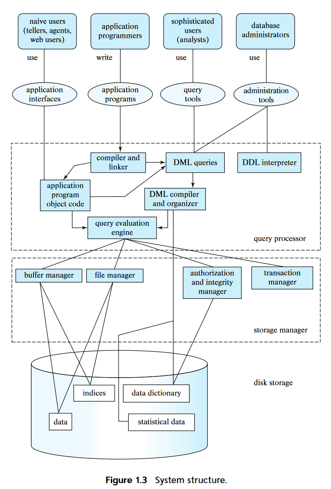
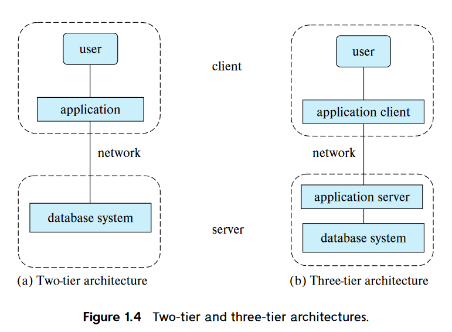

Introduction
Chapter 1 - Introduction
DBMS - Database-management system
- collection of interrelated data and a set of programs to access those data
- primary goal:
- convenient and efficient way to store and retrieve db info
Database-System Applications
- DB systems are used to manage collection of data that:
- valuable
- large
- accessed my multiple users at the same time
- Key to managing complexity is abstraction
- users and application programmers does not need to know underlying details of how the data is actually stored
- There are 2 modes in which DBs are used:
- to support online transaction processing
- to support data analytics
Purpose of Database System
- Major disadvantage of using typical file-processing system (suported by the OS)
- Data redundancy and inconsistency
- Difficulty in accessing data
- Data isolation
- Integrity problems
- Atomicity problems
- Concurrent-access anomalies
- Security problems
- DB systems offer solution for all these problems
View of Data
-
What is DB
- "A collection of interrelated data and a set of progrmas that allows users to access and modify these data"
- provides abstract view of the data
-
4 Categories of Data Models
- Relational Model
- Entity-Relationship Model
- Semi-structured Data Model
- Object-Based Data Model
Data Abstraction
- Physical level
- lowest level of abstraction
- describes how the data are actually stored
- Logical level
- describes what data are stored
- relationships among those data
- describe the entire DB in terms of a small number of relatively simple structures
- does not need to know the complex physical-level structures -> physical data independence
- each record is described by a type definition
- interrelationship of these record types is also defined at this level
- View level
- describes only part of the entire DB
- hides logical level details
- security -> only allows access to certain parts
- simplifies interactoin with the system
- several views are defiend
- describes only part of the entire DB
-
DB programmers != DB Administrators
- DB Admins may be aware of certain details of the physical organization of the data
- DB use data structure called an index to support efficient retrieval of records
-
These abstractions not only hide low level implementations from the users, but also the application program developers
-
instance: The collection of information stored in the DB at a particular moment
-
schema: The overall design of the DB
-
DB systems have several schemas for each level of abstraction
- Physical schema
- describes the DB design at the physical level
- can be changed without affecting application program
- Logical schema
- View schema (aka subschemas)
- Physical schema
-
Good and bad schema designs ? (ch 7)
Database Languages
-
DDL(data-definition language)
- specify the DB schema
- special type of DDL -> data storage and definition language
- used to specify the storage sturcture and access methods
- DDL provides facilities to specify constraints
- Domain Constraints
- domain of possible values
- Referential Integrity
- Authorization
- read, insert, update, delete
- Domain Constraints
- DDL -> output
- "The output of the DDL is placed in the data dictionary, which contains metadata - that is data about data"
-
DML(data-manipulation language)
- express DB quereis and updates
- 2 types:
- Procedural DMLs
- Declarative DMLs (nonprocedural DMLs)
- query is a statement requesting the retrieval of information
-
SQL language -> nonprocedural (Declarative)
- a query takes as input several tables and always returns a single table
-
ODBC (Open Database Connectivity)
- defines appolication program interfaces for use with several programming language
- JDBC (Java Database Connectivity)
Database Design
- Initial Phase
- characterize fuly the data needs of the prospective DB users
- Conceptual-design phase
- choosese a data model and translates into a conceptual shcema of the DB
- Logical design phase
- moving from the abstract data model to the implementation of the DB
- Physical design phase
- physical features of the db are specified
- for of file organization and the internal storage structure
DB Engine
- The functional components of a db system can be broadly divided into:
- storage manager
- manage how information stored on disks as low-level data
- how they move between disk storage and main memory
- use the file system to store data
- translates DML statements into low-level file-system commands
- Components
- Authorization and integrity manager
- Transaction manager ?
- File manager
- Buffer manager
- Data structures it implements
- Data files
- Data dictionary
- Indicies
- manage how information stored on disks as low-level data
- query processor
- translates query language from logical level to sequence of operations at the physical level
- components
- DDL interpreter
- DML compiler
- performs query optimization
- Query evaluation engine
- transaction management
- treat a sequence of db accesses atomically
- happen in its entirety or not at all
- all-or-none requirement -> atomicity
- correctness requirement -> consistency
- persistence requirement -> durability
- allows devs to think at a higher level
- transaction -> a collection of operations that performs a single logical function in a db application
- each transaction is a unhit of both atomicity and consistency
- components
- recovery manager
- concurrency-control manager
- treat a sequence of db accesses atomically
- storage manager
Database and Application Architecture

two-teir and three-tier architecture

- Rather than distributing the business logic of the application to all clients, it is better to embed in the application server only.
- three-teir architecuter provides better security as well as performance
History of DB systems
- 1950s
- magnetic tapes
- data could be only read sequentially
- 1960s
- hard disks cam out
- allowed direct access to data -> free from sequentiality
- 1970s~1980s
- Initially existing network and hierarchial DB was much better
- System R -> efficient relational DB system
- Soon Ingres, Oracle, DB2, etc... came out
- In 1980s relational model almost replaced the existing network and heirarchial DB model
- 1990s
- SQL language was designed -> to support query intensive applications
- until 1980s, applications were mostly update-intensive
- WWW came out
- 2000s
- semi-structured data
- XML, JSON
- added support for spatial data (location)
- social network -> graph DB
- need for rapid development -> NoSQL systems
- semi-structured data
- 2010s
- NoSQL systems evolved to provide features to support stricter notions of consistency
- Enterprise started outsorcing data storage and management
- cloud services
- "software as a service"